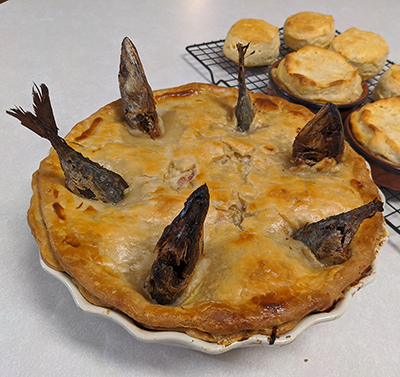

Stargazy Pie
Ingredients
- 30g/1oz butter
- 1 onion, finely chopped
- 1 leek, finely chopped
- 3 rashers (smoked or unsmoked) streaky bacon, finely chopped
- 20g/¾oz plain flour
- 3 tbsp dry white wine
- 250ml/9fl oz fish stock
- 300ml/10fl oz double cream
- pinch saffron strands
- 1 tsp salt
- small bunch fresh parsley, chopped
- 3 free-range eggs, 2 hard-boiled and chopped, 1 beaten to glaze
- 200g/7oz puff pastry
- 6 small mackerel, butterflied with the heads on (backbone and tail removed)
- freshly ground black pepper
- boiled new potatoes and green vegetables, to serve
Preheat the oven to 200C/180C Fan/Gas 6.
Melt the butter in a pan over a low heat, add the onion, leek and bacon and cook over a low heat until very soft but not browned.
Stir in the flour to make a roux and cook for a minute. Add the white wine and fish stock, stir well to remove any lumps, bring to the boil, then turn down to a simmer and cook for 5–10 minutes until the sauce has thickened. Add the cream and bring to the boil, stirring until you have a thick sauce. Add the saffron, salt andsome pepper, stir in the parsley and fold in the chopped hard-boiled eggs.
Roll out the pastry to about 3mm/⅛in thick. Cut out a long, 2cm/¾in wide strip of pastry. Dampen the rim of a deep pie dish with water and press the pastry strip onto the rim. Pour a little of the sauce into the dish and arrange the mackerel on top, with their heads on the edges of the dish. Pour over the remaining sauce.
Cut out a piece of pastry a little bigger than the size of the dish, then cut slits in the pastry large enough to poke the mackerel heads through. Carefully lower onto the pie dish, then, working around the dish one fish at a time, poke the fish heads through the pastry. Brush the pastry with beaten egg and bake for 40–45 minutes until the pastry is golden and crisp. Serve with new potatoes and green vegetables.